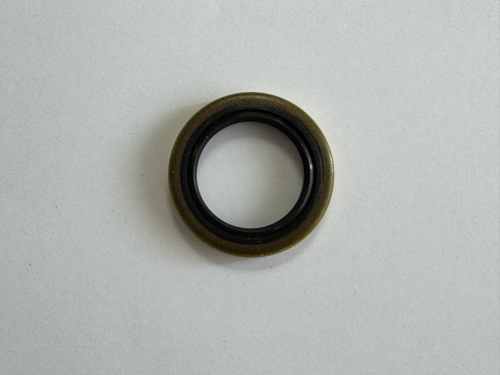

Сальник насоса Z-2000 малый арт.4441
Артикул: 1181
1 800 ₽
Раздел: Комплектующие к насосам Z-2000 · АГЗС
Наличие и сроки — по запросу. Поставляем оригинал и аналоги. Доставка по России.
Описание
Сальник насоса Z-2000 малый арт.4441 — позиция из раздела «Комплектующие к насосам Z-2000» для АГЗС. Компания SYNDICAT поставляет оборудование и комплектующие для автозаправочных и газозаправочных станций по всей России. Цена и наличие «Сальник насоса Z-2000 малый арт.4441» — по запросу: оставьте заявку или позвоните, подберём оригинал или аналог и рассчитаем доставку.